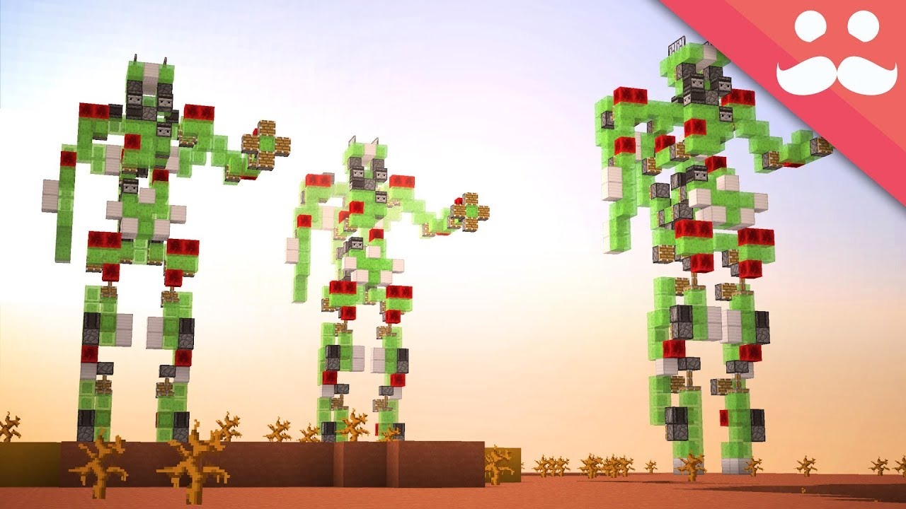
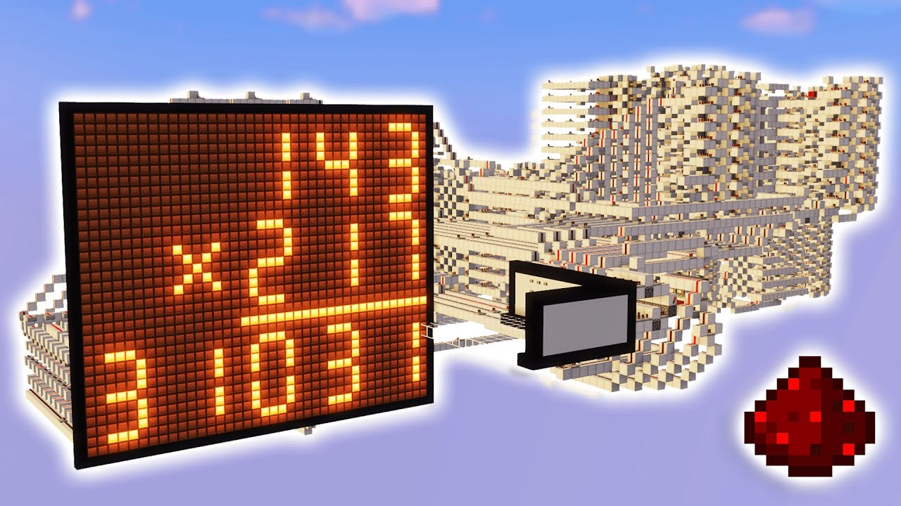
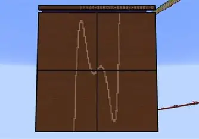
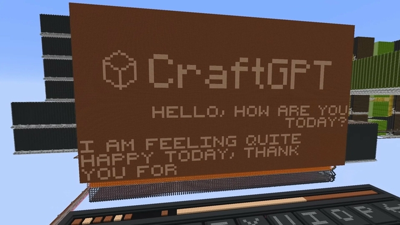
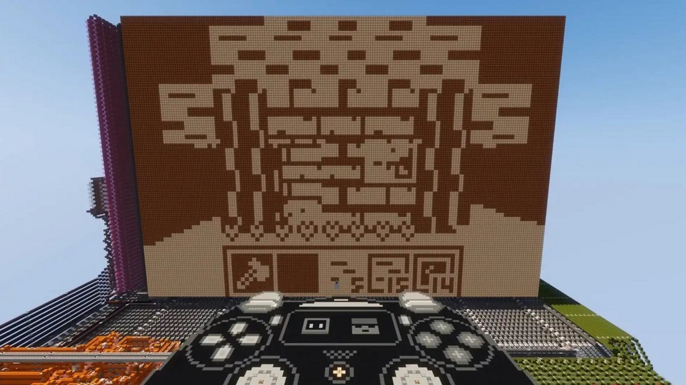

Accueil
Top 5 des constructions les plus avancées à base de redstone
Top 5 : Walking Robot par Mumbo Jumbo
"Walking Robot" est comme son nom l'indique un immense projet visant à créer un automate capable de se déplacer grâce à la redstone.
Making a MEGA WALKING ROBOT in Minecraft!

Top 4 : Redstone Tetris Game par MattBatWings
Ce build permet de jouer à Tetris avec un vrai gameplay : affichage,interactions,tout ça uniquement avec de la redstone.
I Made Tetris with Minecraft Redstone!
Top 3 : Redstone Graphing Calculator par Discorso
Une véritable calculatrice scientifique capable d'éxecuter de simple calcul comme des additions
ou des choses beaucoup plus complexes du style équations ou courbes traçées directement avec les blocs Minecraft.

Top 2 : CraftGPT par Sammyuri
Son nom laisse transparaître l'une des constructions les plus colossales du jeu : une IA recrée dans le jeu.
La construction de plus de 439 millions de blocs comme indiqué dans cet article serait capable de répondre à de simple questions.
L'ia "minecraftienne" serait très lente pour répondre,plus de 2h lorsque le jeu est accéléré 40 000 fois et peut commettre quelques erreurs
mais le joueur souligne que le but n'est pas la rendre rapide ou infaillible,juste prouver que c'est possible.
I built ChatGPT with Minecraft redstone!

Top 1
CHUNGUS 2 — l’ordinateur en Redstone également par sammyuri
Ce chef d'oeuvre mécanique est l'une des constructions les plus complexe et génial;il permet de jouer à Minecraft dans Minecraft.
Le joueur a crée un réel ordinateur à base de redstone capable de reprdoduire le jeu dans lequel il est créé.
Incroyable : il crée un ordinateur dans Minecraft capable de faire tourner Minecraft
